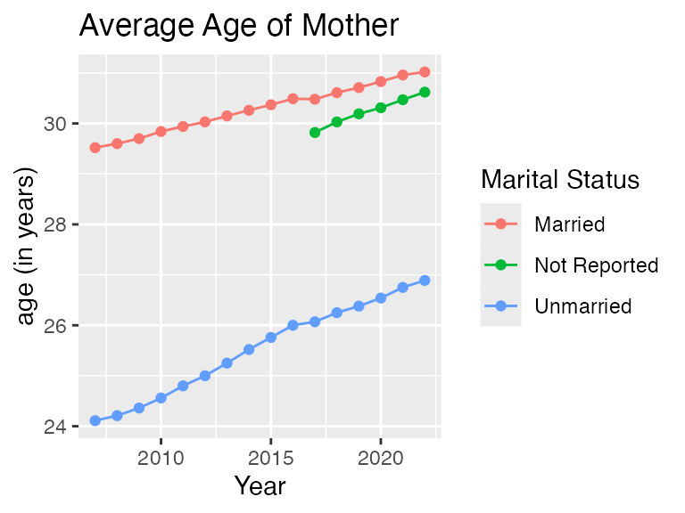

Introduction to wonderapi
Joyce Robbins
2024-03-15
Source:vignettes/IntroVignette.Rmd
IntroVignette.RmdOverview
This package makes it easier to use the CDC WONDER API: 1) users can write simple queries using human readable names rather than numeric codes, and 2) users receive data in a tidy data frame that is easy to work with.
NOTE, HOWEVER, THAT THE CDC DOES NOT ALLOW QUERIES WITH LOCATION FIELDS THROUGH THE API. If you wish to limit or group results by Region, Division, State or County, or Urbanization, use the CDC Wonder web interface rather than the API – either with or without this package. For more information on this limitation, see: https://wonder.cdc.gov/wonder/help/WONDER-API.html.
Installation
This package is not on CRAN. It can be installed from Github with the
remotes package:
remotes::install_github("socdataR/wonderapi", build_vignettes = TRUE)(If you have trouble installing the vignettes, or prefer not to, you can access them on the package website under the Articles tab instead.)
Main functions
send_query() – takes as input an .xml file
exported from the CDC Wonder web interface
getData() – takes as input an R list of query
options
show_databases() displays available databases by name
and code:
wonderapi::show_databases()## # A tibble: 7 × 2
## label name
## <chr> <chr>
## 1 Natality for 1995 - 2002 D10
## 2 Natality for 2003 - 2006 D27
## 3 Natality for 2007 - 2022 D66
## 4 Natality for 2016 - 2022 (expanded) D149
## 5 Detailed Mortality D76
## 6 Provisional Multiple Cause of Death D176
## 7 Heat Wave Days D104(Applies only to getData(). Any database can be used
with send_query().)
More databases will be added in the future.
The best way to become familiar with CDC WONDER API options is to use the CDC WONDER web interface, as the options available through the API are nearly identical (except for the location variable limitation – see above).
Getting started with send_query()
This function requires an .xml query request file. To
obtain this file, create a query on CDC WONDER. Before clicking “Send”,
uncheck the “Show totals” button at the bottom, and take note of the
database code starting with “D” at the end of the URL.
After sending the query, click the “API Options” tab and then the
“Export API” button to download the query .xml.
Once you have this file, you can use it with the
send_query() function:
send_query("D76", "Underlying Cause of Death, 1999-2020_1710519087439-req.xml")## # A tibble: 44 × 5
## Year Gender Deaths Population `Crude Rate`
## <chr> <chr> <dbl> <dbl> <dbl>
## 1 1999 Female 12291 1932563 6.4
## 2 1999 Male 15646 2026854 7.7
## 3 2000 Female 12317 1981845 6.2
## 4 2000 Male 15718 2076969 7.6
## 5 2001 Female 12091 1968011 6.1
## 6 2001 Male 15477 2057922 7.5
## 7 2002 Female 12317 1963747 6.3
## 8 2002 Male 15717 2057979 7.6
## 9 2003 Female 12123 1996415 6.1
## 10 2003 Male 15902 2093535 7.6
## # ℹ 34 more rowsGetting started with getData()
Queries are composed of parameter name-value pairs:
mylist <- list(list("And By", "Gender"))
mydata0 <- getData("Detailed Mortality", mylist)
head(mydata0)## # A tibble: 6 × 5
## Year Gender Deaths Population `Crude Rate`
## <chr> <chr> <dbl> <dbl> <dbl>
## 1 1999 Female 1215860 142237295 855.
## 2 1999 Male 1175183 136802873 859
## 3 2000 Female 1225706 143368343 855.
## 4 2000 Male 1177289 138053563 853.
## 5 2001 Female 1232913 145077463 850.
## 6 2001 Male 1183090 139891492 846.Codebooks
Codebooks are provided as package vignettes to allow the user to conveniently look up the names and values of available parameters in each dataset. They may be accessed quickly by typing:
in the console, or searching for “codebook” in the Help
window. They are also available under the “Articles” tab of the package website.
The codebooks are an important contribution of the package and are not provided by the CDC. They are generated automatically by this script, which scrapes the CDC WONDER web interface form, and displays parameter names and values in human readable form. The benefit of this method is the ability to quickly produce and update codebook vignettes that closely follow the web interface, with parameters appearing in the same order. It also means, however, that the codebooks contain more information than the typical user needs to submit a query. Most users will only need Group By variables (codes beginning with “B_”), Measures (codes beginning with “M_”), and Limiting Variables (codes beginning with “V_”).
Although some of the parameter names are long and/or awkward, for the sake of consistency, we follow the CDC names exactly. The only exception is that any content that appears in parentheses should be dropped. For example, “Fertility Rate” can be substituted for “M_5”, but “Fertility Rate (Census Region, Census Division, HHS Region, State, County, Year, Age of Mother, Race) cannot.
Default query lists and requests
To facilitate the process of designing a query list, this package
relies on default query lists. Each default query is set to request a
single Group By Results parameter, generally set to "Year".
It is set to request the Measures that are listed as default Measures on
the web interface (i.e. Births for the Births
dataset; Deaths, Population and
Crude Rate for the Detailed
Mortality dataset.) To see the default settings, perform a query
request without specifying a querylist:
## # A tibble: 6 × 2
## Year Births
## <dbl> <dbl>
## 1 2007 4316233
## 2 2008 4247694
## 3 2009 4130665
## 4 2010 3999386
## 5 2011 3953590
## 6 2012 3952841## # A tibble: 6 × 4
## Year Deaths Population `Crude Rate`
## <chr> <dbl> <dbl> <dbl>
## 1 1999 2391043 279040168 857.
## 2 2000 2402995 281421906 854.
## 3 2001 2416003 284968955 848.
## 4 2002 2443030 287625193 849.
## 5 2003 2447946 290107933 844.
## 6 2004 2397269 292805298 819.The default lists were prepared based on CDC examples, but we make no claim that they are error free. If you have any suggestions for improving them, please make a pull request on Github or open an issue. The default lists are available in the /data-raw folder.
Creating customized queries
There are different types of parameters. Most critical are Group Results By and Measures. The Group Results By parameters serve as keys for grouping the data; the maximum number of Group Results By parameters is five. Limiting Variables may also be used to constrain results behind the scenes.
To make changes to the default list, first create a list of lists, wherein each nested list is a name-value pair. For example, the following changes the first (and currently only) “Group Results By” variable to Weekday:
head(mydata)## # A tibble: 6 × 4
## Weekday Deaths Population `Crude Rate`
## <chr> <dbl> <chr> <chr>
## 1 Sunday 8049406 Not Applicable Not Applicable
## 2 Monday 8120828 Not Applicable Not Applicable
## 3 Tuesday 8066322 Not Applicable Not Applicable
## 4 Wednesday 8074854 Not Applicable Not Applicable
## 5 Thursday 8087969 Not Applicable Not Applicable
## 6 Friday 8197715 Not Applicable Not ApplicableAs the set up is slightly different depending on the parameter type, more details on setting up the name-value pairs by parameter types are provided below.
Group By variables
Each dataset allows for fixed number (5 or fewer) Group By variables,
codes for which are "B_1", "B_2", "B_3", etc.
"Group By Results" may be substituted for
"B_1" and "And By" for "B_2".
"And By” may not, however, be substituted
for "B_3" on to avoid ambiguity (this may change in the
future.) Values – in this case, the Group By variables – may be
specified by code or human readable name. The following, thus, are
equivalent:
## not run
mylist <- list(list("B_1", "D66.V2"))
mylist <- list(list("Group Results By", "Race"))
mylist <- list(list("B_1", "Race"))
mylist <- list(list("Group Results By", "D66.V2"))See the appropriate codebook for all Group By options.
Measures
Measures do not need values; it is sufficient to specify a name only:
mylist <- list(list("Group Results By", "Marital Status"),
list("And By", "Year"),
list("Average Age of Mother", ""))
mydata2 <- getData("Natality for 2007 - 2022", mylist)
head(mydata2)## # A tibble: 6 × 4
## `Marital Status` Year Births `Average Age of Mother`
## <chr> <dbl> <dbl> <dbl>
## 1 Married 2007 2601186 29.5
## 2 Married 2008 2521128 29.6
## 3 Married 2009 2437007 29.7
## 4 Married 2010 2365915 29.8
## 5 Married 2011 2345817 29.9
## 6 Married 2012 2343222 30.0Limiting variables
Queries can be constrained with parameters that limit results in the background. For example, if you’re only interested in February births, you may choose to limit results to February as follows, rather than grouping by Month:
## # A tibble: 16 × 2
## Year Births
## <dbl> <dbl>
## 1 2007 326891
## 2 2008 338521
## 3 2009 316641
## 4 2010 301994
## 5 2011 297961
## 6 2012 304505
## 7 2013 291748
## 8 2014 298404
## 9 2015 298058
## 10 2016 306015
## 11 2017 289054
## 12 2018 284250
## 13 2019 279963
## 14 2020 282654
## 15 2021 266355
## 16 2022 275727Note that values for Limiting Variables must be entered as codes; in this case “2” rather than “February.” We hope to add capability for human readable values in the future.
Plotting query results
By returning a tidy data frame, the query results are ready to be plotted without any additional data manipulation:
ggplot(mydata2, aes(x = Year, y = Births, color = `Marital Status`)) +
geom_line() +
labs(title = "Births by Marital Status")
ggplot(mydata2, aes(x = Year, y = `Average Age of Mother`, color = `Marital Status`)) +
geom_line() +
geom_point() +
labs(title = "Average Age of Mother", y = "age (in years)")
mydata2 <- mydata2 |>
select(-`Average Age of Mother`) |>
spread(key = `Marital Status`, value = `Births`) |>
mutate(Total = Married + Unmarried)
ggplot(mydata2, aes(x = Year, y = Unmarried / Total)) +
geom_line() +
geom_point() +
labs(title = "Births to Unmarried Mothers",
y = "Percent of Total Births")Combining results from multiple datasets
Some of the datasets, such as the Births, are divided into multiple
databases by time period. wonderapi makes it easy to
combine the data into one data frame. (Care needs to be taken as the
variables are not identical in all. For example, the 1995 - 2002 dataset
does not have any measure options; it only returns number of births. To
find out what’s available, see the codebooks
(>??codebook) and crosscheck with the
CDC Wonder web interface.)
Errors
The main source of errors is improper query requests. The
wonderapi package has some ability to catch problems before
the query request is made but will not catch everything. It checks the
list of parameter names and will reject the name-value pair if the
name, either in code or human readable form, is not recognized
or is a geographic variable not accessible through the API without
permission. (Checking for value problems will be added in the
future.) Here is an example of an unrecognized parameter name:
## Couldn't find: "Suspect" but including anyway.
head(mydata3)## # A tibble: 6 × 4
## Year Deaths Population `Crude Rate`
## <chr> <dbl> <dbl> <dbl>
## 1 1999 2391043 279040168 857.
## 2 2000 2402995 281421906 854.
## 3 2001 2416003 284968955 848.
## 4 2002 2443030 287625193 849.
## 5 2003 2447946 290107933 844.
## 6 2004 2397269 292805298 819.If the CDC WONDER API returns an error, the message in the response will be displayed. Sometimes the message will provide enough information to fix the problem. Other times, it is not. For example:
mylist <- list(list("And By", "Education"),
list("Birth Rate", ""))
mydata4 <- getData("Natality for 2007 - 2022", mylist)## Message from query:
## Any by-variables picked from {0} need to appear in the order listed, and other by-variables can't come between them.## Error in getData("Natality for 2007 - 2022", mylist): Internal Server Error (HTTP 500).In this case, the best approach is to visit CDC WONDER and try the same query. If all goes well, you will receive more detailed information on what went wrong:
We learn that we can’t include “Education” if we request the “Birth Rate” measure. If we try again with “Bridged Race” instead of “Education”, it works:
mylist <- list(list("And By", "Mother's Bridged Race"),
list("Birth Rate", ""))
mydata5 <- getData("Natality for 2007 - 2022", mylist)
head(mydata5)## # A tibble: 6 × 5
## Year `Mother's Bridged Race` Births `Total Population` `Birth Rate`
## <dbl> <chr> <dbl> <chr> <chr>
## 1 2007 American Indian or Alaska Native 49443 3,829,898 12.91
## 2 2007 Asian or Pacific Islander 254488 15,559,373 16.36
## 3 2007 Black or African American 675676 40,451,108 16.70
## 4 2007 White 3336626 241,390,828 13.82
## 5 2008 American Indian or Alaska Native 49537 3,983,929 12.43
## 6 2008 Asian or Pacific Islander 253185 16,094,699 15.73